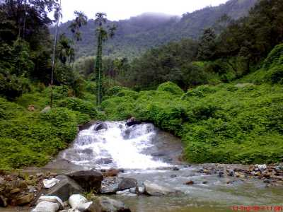

Kozhikode or Calicut district, in the central part of the former Malabar district, is a district of Kerala state, on the southwest coast of India. The city of Kozhikode, also known as Calicut, is the district headquarters. The district is 38.25% urbanised.
Kozhikode district is bordered by the districts of Kannur and Mahé (Puducherry) to the north, Wayanad to the east, and Malappuram to the south. The Arabian Sea lies to the west and Western Ghats stretches towards east. Vavul Mala is the highest peak in the district.
It lies between latitudes 11° 08'N and 11° 50'N and longitudes 75° 30'E and 76° 8'E.
The district is divided into four taluks: Kozhikode, Vatakara, Koyilandy and Thamarassery. By the 2011 census there are 12 block panchayats: Balusseri, Chelannur, Koduvally, Kozhikode, Kunnamangalam, Kunnummal, Melady, Panthalayani, Perambra, Thodannur, Thuneri and Vatakara. Wayanad district and Malappuram district were formed by taking parts of erstwhile Kozhikode district.
Thikkoti Light House
Said to be built on the remains of a shipwreck, the Thikkoti Lighthouse is one of the major attractions of Kozhikode. Located on a rocky shoreline, the place is best known for the scenic views it offers as well as several species of nomadic birds.
Beypore
Said to be built on the remains of a shipwreck, the Thikkoti Lighthouse is one of the major attractions of Kozhikode. Located on a rocky shoreline, the place is best known for the scenic views it offers as well as several species of nomadic birds.

Kakkayam
Its a dam site located in Kozhikode of Kerala state surrounded by lush greenery .The distance is about 15 km from Kakkayam Bus stop. There is a forest office at top . You need to take permission from the official authories before going ahead.